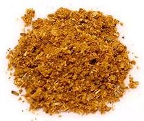

 |
Malay Curry Powder - FishMalaysia & Singapore - serbuk kari - ikan | ||||
| Makes: Effort: Sched: DoAhead: |
7 T * 10 min Yes |
Malaysians use this powder for Fish. For Meat and Poultry, see our Malay Curry Powder - Meat. This recipe fits in a 4-oz spice jar. | |||
|
1/4 1 2 2 1/2 1/2 1/8 1 |
c T t t t t t T |
Coriander seeds Chili Powder (1) Cumin seeds Fennel seeds Peppercorns Cinnamon Nutmeg Turmeric |
Make: - (10 min) |